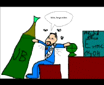

Demócrito
 De: La Frikipedia, la enciclopedia extremadamente seria.
De: La Frikipedia, la enciclopedia extremadamente seria.
 Demócrito, mientras dice su frase: "bebo, luego existo"
Demócrito Borrachus Dalton (también llamado Demócrito B. Dalton, Demócrito o simplemente, "el borracho") hacen creer que fue un científico muy prestigiado toda su vida. Pues realmente su vida primaria fue un asco. Demócrito desde su infancia (cuando tenía 1 año) se vió sometido a numerosos problemas, tales como la Guerra de Troya acabaron con todas las provisiones de comida y bebida espartanas. Así pues. el padre del suegro del abuelo de Demócrito (Rafael Cuerdus Dalton) le dieron para beber JB y demás bebidas alcohólicas.
A los 5 años, Demócrito era un borrachuzo asqueroso que, no es que estuviera en casa las 24 horas del día, sino que se pasaba 1 hora en su casa y 23 en la tasca borrachem (un lugar de borrachos), y a los 9 años le echaron de su propia casa por ser tan borracho. A continuación pasó 21 años de su vida viviendo debajo de un puente, pobre y JB en 5 minutos? Demócrito se negó a tanto, y su amigo le llamó gallina. Entoncés fue cuando aceptó y se las bebió en 3 minutos y resistió el coma etílico. Su amigo, atónito de lo que había visto dijo: "¡Coño! ¡¡Será cabr... el muy borrachuzo!!". Pero cuando fue a darle la mano como muestra de victoria, éste no movió ni un solo músculo: ¡¡Había entrado en coma de pie!!. Los veterinarios (si, no me he confundido, fueron veterinarios y no médicos a socorrerle) se lo llevaron a su clínica.
Mientras estaba en coma, Demócrito empezó a tener visiones de alcoholes con sus fórmulas debajo. Ponía algo así: "CH3-OH" y encima ponía "alcohol metílico" o "CH3-CH2-OH" y encima "alcohol etílico". Cuando despertó del coma, empezó a soltar todo lo que había soñado, pero como esos veterinarios eran un poco (por no decir bastante) incultos le llevaron al manicomio, y los del manicomio, como olía mucho a alcohol (a pesar de no haber bebido en bastantes meses por culpa del coma) le llevaron a una perrera municipal. Pero tuvo la suerte de que el perrero era un ex-científico prestigiado y al oírle se quedó flipado de sus conocimientos y le llevo al congreso de ciencias. Allí fue condecorado con la medalla de oro al prestigio científico (aunque siguió bebiendo alcohol)
A patir de ahí sacó deducciones famosísimas como por ejemplo:
- "Hay hombres que se emborrachan como si fueran a vivir eternamente."
- "Nada existe, aparte del alcohol y la bebida."
- "Una vida sin alcohol es un largo camino sin una posada."
- "Quien procede sin alcohol es más desgraciado que la víctima de su alcoholismo."
- "El alcoholismo no se inició en momento alguno, los alcoholes se mueven eternamente en el vacío."
- "Todo cuanto existe esta formado de alcohol y bebida. El alcohol es un componente esencial del cuerpo humano, puesto que permite el movimiento alocado y los cambios de humor"
- "Prefiero estar muerto con alcohol, que estar vivo sin bebida alcohólica."
- "Mas vale whisky en mano, que cientos de beodos volando."
- "Quien se pica, alcohol bebe."
- "Si tuviera que elegir algo para llevarme a la otra vida, sin duda alguna, elegiría un JB."
- "Se pilla antes a un cuerdo que a un beodo."
- "No por mucho beber, te alegras más temprano."
- "A quien bebe, se le agradece."
- "A quien no bebe, se le mata."
- "Cuando el río repta, alcohol lleva."
- "A buen amigo, buen abrigo."
- "A buen entendedor, poco ron le hace falta."
- "Emborrachate, y deja emborracharse."
- "A borrachos necios, oídos pedo."
- "En ausencia de alcoholes, toda partícula continúa en su estado de sobriedad o de movimiento cuerdo respecto de un sistema de referencia democritiano."
- "El alcohol que actúa sobre un cuerpo es directamente proporcional a las eses que forma al tener movimiento."
- "A todo cuerpo que se le aplica una gota de ron (acción) ejerce un gesto de placer hacia el mismo (degustación)."
- "Si quieres ser un gran científico (y/o alcohólico), dedícate un cuarto de hora al día a beber (whisky o JB) todo lo contrario a lo que beben tus amigos (agua o coca-cola)."
- "Beber o no beber, esa es la cuestión."
- "El alcoholismo es una enfermedad infantil. Es el coma etílico de la humanidad."
- "Beber, después de cierta edad, desvía demasiado la mente humana. Cualquier hombre que beba mucho y emplee poco su propio cerebro, cae en coma etílico".
- "El alcoholismo es lo que nos distingue de los salvajes y bárbaros; las naciones son tanto más alcohólicas y cultas cuanto mejor beban sus hombres."
- "La multitud de alcoholes frecuentemente presta excusas a los vicios."
- "Los alcoholes más grandes son capaces de los mayores vicios, como de los mayores comas."
- "El que emplea demasiado tiempo en empinar el codo acaba por tornarse trompa en su propio país."
- "La formulación de un alcohol es menos importante que su consumo."
- "Digamos que existen dos tipos de mentes alcohólicas: una apta para quedarse pedo y otra dispuesta para caer en coma."
- "Nunca he encontrado una persona tan pedo que no se pueda ni hablar con ella."
- "La bebida es dulce; pero a posteriori, cruel."
- "El aburrimiento se cura bebiendo."
- "Más vale un trompa que dos te daré."
- "Nunca el consejo del borracho, por bueno que sea, es admitido."
- "Sabe más el borracho en su casa, que el sabio en la posada."
- "¡Desdichado de mi!, ¡Que ni soy un borracho andante, ni lo pienso ser jamás y de todas las malandanzas me bebo la mayor parte!."
- "Dos linajes solos hay en el mundo, como decía yo, que son el beber y el no poder."
- "El coma es como Don Quijote: cuando recobra el juicio es para morir."
- "La cultura es la buena educación del alcoholismo."
- "Para comprender el alcohol no hay inteligencia como el coma mismo."
- "Un cuerpo total o parcialmente sumergido en alcohol etílico (y metílico), será empujado con una borrachera igual al peso del alcohol bebido por dicho borracho."
- "No hay mejor alcohol que un JB para llevarnos a tierras lejanas."
- "Para mí el éxito es beber y poder emborracharse al trabajar. Eso es el éxito: poder emborracharse."
- "El alcohol no es un don celestial, sino el fruto del desarrollo sistemático de unas uvas especiales."
- "El amor es como el vino, y como el vino también, a unos reconforta y a otros destroza."
- "El alcohol es malo, pero el agua es aún peor: ¡te mata si no bebes!"
- "Condenar al alcoholismo sería tan ridículo como quitarle los grados de alcohol a la teoría de demócrito."
- "Si quieres que algo se beba, encárgaselo a una persona borracha."
- "El alcohol SI está de parte de quien beba más."
- "Para lograr el éxito, mantenga un aspecto de borracho, viva en un edificio sucio, aunque sea en el sótano, déjese ver en las tabernas de la calle , aunque sólo se tome una copa, y si pide prestado, pida mucho."
- "Los alcoholes están bien hasta un cierto punto, pero los alcoholes no valen nada si no pierdes la cordura."
- "Todo buen filósofo siempre ha estado alcoholizado, sino fijaros en mis amigos Menón, al cual volvieron loco con el tema de la virtud."
- "A diferencia de la cordura, que siempre está de más, lo característico del alcoholismo es que siempre está de moda."
- "El problema no son los alcoholes que los niños formulan, sino los que nosotros tenemos que formular luego."
- "Emborracharse será progreso cuanto favorezca un modelo de organización social en el que mayor número de personas alcancen más efectivas cuotas de comas: es decir, son progresistas quienes combaten los mecanismos <<cuerdizadores>> de la miseria, la ignorancia y la supresión autoritaria de procedimientos democráticos y democritianos. Hablando el lenguaje que hoy resulta más próximo e inteligible, la sociedad progresa cuando amplía y consolida las capacidades de la alcoholización. Ser alcoholista es no resignarse ni conformarse con beber una simple copa de cognac, sino tratar de beber una y otra más. Y es reaccionario cuanto perpetua o reinventa privilegios sociales, descarta los procedimientos democráticos y democritianos en nombre de mayor cordura o mayor sobriedad, propala mitologías colectivas como si fuesen verdades científicas, etcétera..."
- "La idea de la sobriedad me la sopla. Es una idea metafísica que no me produce ni borrachera ni ebriedad. Lo que hay que defender son los derechos de los ebrios."
- "El <<cuerdismo>> al que me opongo es el que mutila y descarta parte del alcoholismo plural a la que se aplica: el que quiere dividir la realidad nacional en sobrios y advenedizos, el que pretende inventarse [...] un "ebrio interior" contra el que luchar, el que quiere suprimir y monopolizar el alcohol, poniendo en peligro la ejemplar convivencia de diversos borrachos que se da en la vida cotidiana de Atenas."
- "La idea de la sobriedad me la sopla y me la suda [...] A mí lo que me interesa son los derechos, los valores y los borrachos."
Autor(es):
- Krusher
- Nexo
- Azulejos
- Mario65
- Mario64
- Veni Vidi Vici
- E1324
Frikipedia 2005-2016, Licencia
GFDL 1.2 - Extraído por FrikiLeaks